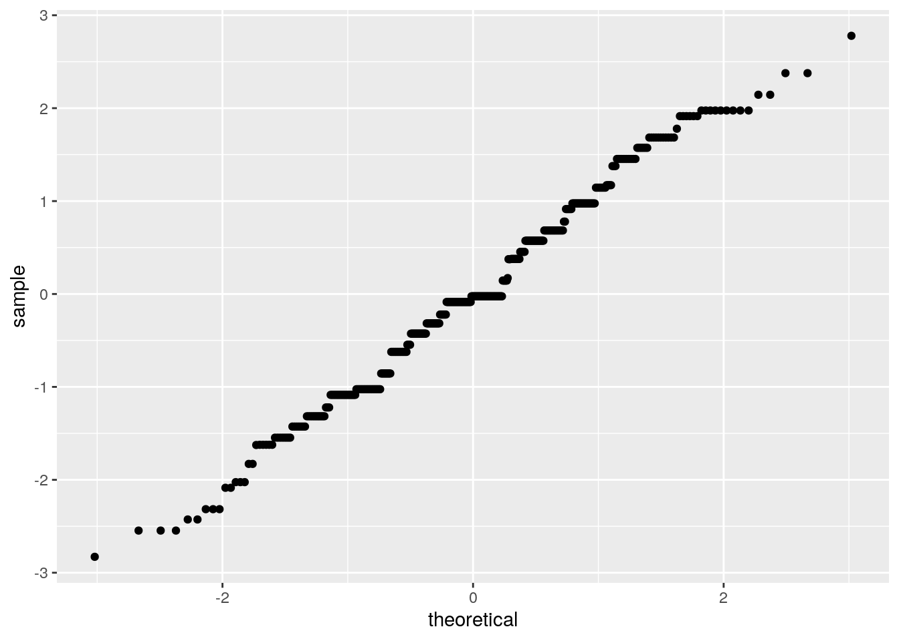

The data I chose to use is called “Stud”. This data set includes 395 observations and the data were obtained in a survey of students math and portuguese language courses in secondary school. It contains a lot of interesting social, gender and study information about students and their alcohol consumption in regards to these variables. There are 30 variables in total, some are age, school, sex, family size, parent’s cohabitation status (Pstatus), number of past class failures(failures),weekend alcohol consumption (Walc,numeric: from 1 - very low to 5 - very high), etc. ## MANOVA Testing
stud <- read.csv("stud.csv")
stud <- data.frame(stud)
man1 <- manova(cbind(age, absences) ~ Walc, data = stud)
summary(man1)## Df Pillai approx F num Df den Df Pr(>F)
## Walc 1 0.027574 5.5577 2 392 0.004168 **
## Residuals 393
## ---
## Signif. codes: 0 '***' 0.001 '**' 0.01 '*' 0.05 '.' 0.1 ' ' 1summary.aov(man1)## Response age :
## Df Sum Sq Mean Sq F value Pr(>F)
## Walc 1 8.82 8.8236 5.4806 0.01973 *
## Residuals 393 632.72 1.6100
## ---
## Signif. codes: 0 '***' 0.001 '**' 0.01 '*' 0.05 '.' 0.1 ' ' 1
##
## Response absences :
## Df Sum Sq Mean Sq F value Pr(>F)
## Walc 1 468.8 468.76 7.4382 0.006671 **
## Residuals 393 24766.8 63.02
## ---
## Signif. codes: 0 '***' 0.001 '**' 0.01 '*' 0.05 '.' 0.1 ' ' 1pairwise.t.test(stud$age, stud$Walc, p.adj = "none")##
## Pairwise comparisons using t tests with pooled SD
##
## data: stud$age and stud$Walc
##
## 1 2 3 4
## 2 0.0211 - - -
## 3 0.0055 0.6460 - -
## 4 0.4418 0.2856 0.1460 -
## 5 0.0249 0.4935 0.7234 0.1506
##
## P value adjustment method: nonepairwise.t.test(stud$absences, stud$Walc, p.adj = "none")##
## Pairwise comparisons using t tests with pooled SD
##
## data: stud$absences and stud$Walc
##
## 1 2 3 4
## 2 0.8049 - - -
## 3 0.1534 0.1383 - -
## 4 0.0071 0.0081 0.1806 -
## 5 0.2129 0.1836 0.7886 0.4410
##
## P value adjustment method: nonelibrary(rstatix)
group <- stud$Walc
X <- stud %>% select(age, absences)
sapply(split(X, group), mshapiro_test)## 1 2 3 4 5
## statistic 0.592601 0.8780099 0.6961741 0.8092928 0.8725246
## p.value 9.437798e-19 8.692424e-07 1.410584e-11 1.195218e-06 0.002758394I conducted 1 MANOVA, 1 ANOVA, and 2 t-tests. The MANOVA provided significant differences among the individual students for at least once of numerical variables. Pillai = 0.027574, F = 5.5577 , and p = 0.004168. Univariate ANOVAs were performed as a follow-up and for age the statistics are the following: F = 5.4806 and p = 0.01973. For absences, the statistics are the following: F = 7.4382 and p = 0.006671. Pairwise comparisons (t-tests) were also conducted and since age and absences differed.
library(tidyverse)
library(vegan)
stud %>% group_by(sex) %>% summarise(means = mean(Walc)) %>%
summarise(mean_diff = diff(means))## # A tibble: 1 x 1
## mean_diff
## <dbl>
## 1 0.706rand_dist <- vector()
for (i in 1:5000) {
new <- data.frame(Walc = sample(stud$Walc), sex = stud$sex)
rand_dist[i] <- mean(new[new$sex == "M", ]$Walc) -
mean(new[new$sex == "F", ]$Walc)
}
{
hist(rand_dist, main = "", ylab = "")
abline(v = c(-0.119127, 0.119127), col = "blue")
}mean(rand_dist > 0.119127 | rand_dist < -0.119127)## [1] 0.341H0 is The amount of weekend alcohol consumption among individuals is the same for males and females. HA: The amount of weekend alcohol consumption among individuals is not the same for males and females. The calculated p-value is 0.3486, therefore, H0 is rejected.
library(lmtest)
library(sandwich)
stud$freetime <- stud$freetime - mean(stud$freetime)
stud$goout <- stud$goout - mean(stud$goout)
fit1 <- lm(goout ~ sex * freetime, data = stud)
summary(fit1)##
## Call:
## lm(formula = goout ~ sex * freetime, data = stud)
##
## Residuals:
## Min 1Q Median 3Q Max
## -2.82879 -0.85554 -0.02498 0.68393 2.77882
##
## Coefficients:
## Estimate Std. Error t value Pr(>|t|)
## (Intercept) 0.01075 0.07615 0.141 0.888
## sexM 0.02041 0.11083 0.184 0.854
## freetime 0.40190 0.07873 5.105 5.18e-07 ***
## sexM:freetime -0.17164 0.11093 -1.547 0.123
## ---
## Signif. codes: 0 '***' 0.001 '**' 0.01 '*' 0.05 '.' 0.1 ' ' 1
##
## Residual standard error: 1.068 on 391 degrees of freedom
## Multiple R-squared: 0.08689, Adjusted R-squared: 0.07989
## F-statistic: 12.4 on 3 and 391 DF, p-value: 9.155e-08coef(fit1)## (Intercept) sexM freetime sexM:freetime
## 0.01074606 0.02041386 0.40190237 -0.17163545stud %>% ggplot(aes(goout, freetime)) + geom_point() +
geom_smooth(method = "lm", se = F)cor(stud$freetime, stud$goout)## [1] 0.2850187res <- fit1$residuals
fitvals <- fit1$fitted.values
ggplot() + geom_point(aes(fitvals, res)) + geom_hline(yintercept = 0,
color = "red")ggplot() + geom_histogram(aes(res))ggplot() + geom_qq(aes(sample = res)) + geom_qq()
coeftest(fit1)[, 1:2]## Estimate Std. Error
## (Intercept) 0.01074606 0.07614917
## sexM 0.02041386 0.11082571
## freetime 0.40190237 0.07872967
## sexM:freetime -0.17163545 0.11093197coeftest(fit1, vcov = vcovHC(fit1))[, 1:2]## Estimate Std. Error
## (Intercept) 0.01074606 0.07541493
## sexM 0.02041386 0.10958635
## freetime 0.40190237 0.08555761
## sexM:freetime -0.17163545 0.12262210fit <- lm(goout ~ freetime, data = stud)
SST <- sum((stud$freetime - mean(stud$freetime))^2)
SST <- sum((stud$freetime - mean(stud$freetime))^2)
SSR <- sum((fit$fitted.values - mean(stud$freetime))^2)
SSE <- sum(fit$residuals^2)
SSR/SST## [1] 0.1009121The coefficient was positive, so this would indicate that the when the go out variable (x-axis) increases, the mean of the free time variable (y-axis) will also increase. A ggplot was created to show the interactions between the two variables that have had their mean centered according to the rubric. Homoskedasticity, normality and linearity was violated. My model explains 99.42% of the variation outcome.
sampl <- replicate(5000, {
boot_dis <- boot_dis <- stud[sample(nrow(stud),
replace = TRUE), ]
fit <- lm(goout ~ sex * freetime, data = boot_dis)
coef(fit)
})
sampl %>% t %>% as.data.frame %>% summarize_all(sd)## (Intercept) sexM freetime sexM:freetime
## 1 0.07541821 0.1083887 0.08394555 0.1213052The standard error for the bootstrap is the highest.
library(lmtest)
library(plotROC)
data <- stud %>% mutate(y = ifelse(sex == "F", 1, 0))
head(data)## school sex age address famsize Pstatus Medu Fedu Mjob Fjob reason
## 1 GP F 18 U GT3 A 4 4 at_home teacher course
## 2 GP F 17 U GT3 T 1 1 at_home other course
## guardian traveltime studytime failures schoolsup famsup paid activities
## 1 mother 2 2 0 yes no no no
## 2 father 1 2 0 no yes no no
## nursery higher internet romantic famrel freetime goout Dalc Walc health
## 1 yes yes no no 4 -0.235443 0.8911392 1 1 3
## 2 no yes yes no 5 -0.235443 -0.1088608 1 1 3
## absences G1 G2 G3 y
## 1 6 5 6 6 1
## 2 4 5 5 6 1
## [ reached 'max' / getOption("max.print") -- omitted 4 rows ]ft <- glm(y ~ studytime, data = data, , family = binomial(link = "logit"))
coeftest(ft)##
## z test of coefficients:
##
## Estimate Std. Error z value Pr(>|z|)
## (Intercept) -1.53620 0.29753 -5.1632 2.427e-07 ***
## studytime 0.81939 0.14145 5.7928 6.923e-09 ***
## ---
## Signif. codes: 0 '***' 0.001 '**' 0.01 '*' 0.05 '.' 0.1 ' ' 1exp(coef(fit1))## (Intercept) sexM freetime sexM:freetime
## 1.0108040 1.0206236 1.4946654 0.8422862logistic <- function(x) {
exp(x)/(1 + exp(x))
}
# confusion matrix
table(truth = data$sex, prediction = data$Walc > 1) %>%
addmargins## prediction
## truth FALSE TRUE Sum
## F 94 114 208
## M 57 130 187
## Sum 151 244 395# accuracy
(114 + 130)/395## [1] 0.6177215# specificity
130/187## [1] 0.6951872# sensitivity
114/208## [1] 0.5480769# precision
114/244## [1] 0.4672131# AUC
widths <- diff(data$y)
heights <- vector()
for (i in 1:100) heights[i] <- data$y[i] + data$y[i +
1]
AUC <- sum(heights * widths/2)
AUC %>% round(3)## [1] -3.5stud$logit <- predict(ft, type = "link")
stud %>% ggplot() + geom_density(aes(logit, color = sex,
fill = sex), alpha = 0.4) + theme(legend.position = c(0.3,
0.6)) + geom_vline(xintercept = 2) + xlab("logit (log-odds)") +
geom_rug(aes(logit, color = sex))# ROC
library(plotROC)
ROCplot <- ggplot(data) + geom_roc(aes(d = y, m = Walc),
n.cuts = 0)
ROCplotcalc_auc(ROCplot)## PANEL group AUC
## 1 1 -1 0.3614382The coefficient intercept estimate is -1.53620. A confusion matrix table was computed to calculate accuracy (0.6177215), sensitivity (0.5480769), specificity (0.6951872) and precision (0.4672131). The AUC that was calculated is -3.5, which is considered a bad AUC. A density plot was also generated to visualise accuracy, sensitivity, specificity and precision. ## Logistic Regression Model 2
# fit model
library(tidyverse)
library(lmtest)
library(pROC)
library(glmnet)
class_diag <- function(probs, truth) {
tab <- table(factor(probs > 0.5, levels = c("FALSE",
"TRUE")), truth)
acc = sum(diag(tab))/sum(tab)
sens = tab[2, 2]/colSums(tab)[2]
spec = tab[1, 1]/colSums(tab)[1]
ppv = tab[2, 2]/rowSums(tab)[2]
if (is.numeric(truth) == FALSE & is.logical(truth) ==
FALSE)
truth <- as.numeric(truth) - 1
# CALCULATE EXACT AUC
ord <- order(probs, decreasing = TRUE)
probs <- probs[ord]
truth <- truth[ord]
TPR = cumsum(truth)/max(1, sum(truth))
FPR = cumsum(!truth)/max(1, sum(!truth))
dup <- c(probs[-1] >= probs[-length(probs)], FALSE)
TPR <- c(0, TPR[!dup], 1)
FPR <- c(0, FPR[!dup], 1)
n <- length(TPR)
auc <- sum(((TPR[-1] + TPR[-n])/2) * (FPR[-1] -
FPR[-n]))
data.frame(acc, sens, spec, ppv, auc)
}
k = 10
data1 <- data[sample(nrow(data)), ]
folds <- cut(seq(1:nrow(data)), breaks = k, labels = F)
diags <- NULL
for (i in 1:k) {
train <- data1[folds != i, ]
test <- data1[folds == i, ]
truth <- test$y
fit <- glm(y ~ Walc, data = train, family = "binomial")
probs <- predict(fit, newdata = test, type = "response")
diags <- rbind(diags, class_diag(probs, truth))
}
apply(diags, 2, mean)## acc sens spec ppv auc
## 0.6105128 0.6997018 0.5011697 0.6097578 0.6288954# 10-fold
k = 10
data <- stud %>% sample_frac
data$binary <- ifelse(data$sex == "F", 1, 0)
folds <- ntile(1:nrow(data), n = 10)
diags <- NULL
for (i in 1:k) {
train <- data[folds != i, ]
test <- data[folds == i, ]
truth <- test$binary
fit <- glm(binary ~ studytime + Medu + traveltime +
famrel + freetime + goout + Dalc + absences,
data = train, family = "binomial")
probs <- predict(fit, newdata = test, type = "response")
diags <- rbind(diags, class_diag(probs, truth))
}
diags %>% summarize_all(mean)## acc sens spec ppv auc
## 1 0.693141 0.7627409 0.6247412 0.6871152 0.7487309# LASSO
data$binary <- ifelse(data$sex == "F", 1, 0)
y <- as.matrix(data$binary)
x <- model.matrix(binary ~ studytime + Medu + traveltime +
famrel + freetime + goout + Dalc + absences, data = data)[,
-1]
head(x)## studytime Medu traveltime famrel freetime goout Dalc absences
## 1 2 4 1 2 0.764557 0.8911392 2 6
## 2 2 4 1 4 -0.235443 -0.1088608 1 2
## 3 3 3 1 4 -0.235443 -0.1088608 1 0
## 4 1 3 1 4 -0.235443 -1.1088608 3 8
## 5 2 2 1 3 -2.235443 -1.1088608 1 6
## 6 2 2 1 5 0.764557 0.8911392 1 0x <- scale(x)
head(x)## studytime Medu traveltime famrel freetime goout
## 1 -0.04223229 1.1424068 -0.6424347 -2.16838804 0.7654280 0.80046413
## 2 -0.04223229 1.1424068 -0.6424347 0.06211528 -0.2357113 -0.09778397
## 3 1.14932149 0.2289439 -0.6424347 0.06211528 -0.2357113 -0.09778397
## 4 -1.23378606 0.2289439 -0.6424347 0.06211528 -0.2357113 -0.99603207
## 5 -0.04223229 -0.6845191 -0.6424347 -1.05313638 -2.2379898 -0.99603207
## 6 -0.04223229 -0.6845191 -0.6424347 1.17736694 0.7654280 0.80046413
## Dalc absences
## 1 0.5826465 0.03637833
## 2 -0.5400138 -0.46342827
## 3 -0.5400138 -0.71333156
## 4 1.7053067 0.28628163
## 5 -0.5400138 0.03637833
## 6 -0.5400138 -0.71333156cv <- cv.glmnet(x, y, family = "binomial")
lasso <- glmnet(x, y, family = "binomial", lambda = cv$lambda.1se)
coef(lasso)## 9 x 1 sparse Matrix of class "dgCMatrix"
## s0
## (Intercept) 0.1111902
## studytime 0.3848172
## Medu .
## traveltime .
## famrel .
## freetime -0.2102993
## goout .
## Dalc -0.2705305
## absences .# 10-fold CV
k = 10
data <- stud %>% sample_frac
folds <- ntile(1:nrow(data), n = 10)
data$binary <- ifelse(data$sex == "F", 1, 0)
diags <- NULL
for (i in 1:k) {
train <- data[folds != i, ]
test <- data[folds == i, ]
truth <- test$binary
fit <- glm(binary ~ Dalc + Walc + freetime, data = train,
family = "binomial")
probs <- predict(fit, newdata = test, type = "response")
diags <- rbind(diags, class_diag(probs, truth))
}
diags %>% summarize_all(mean)## acc sens spec ppv auc
## 1 0.6223718 0.7304931 0.5062334 0.6179722 0.6795413The accuracy of the fit model is 0.6098077, sensitivity is 0.6942596, specificity = 0.5047015, percision is 0.6111905 and the AUC is 0.6283616. The When the 10-fold CV was performed, accuracy = 0.6204487, sensitivity = 0.727996, specificity = 0.5270256 and percision = 0.6301581. The AUC is 0.6980597 which is relatively similar to the average value of the diagnostics. LASSO was performed on the binary variable and all the other variables and the variables that were retained for the 10-fold CV are math and expenditure. The AUC when the 10-fold cross validation was performed. There was an decrease in AUC so that does not indicate a lot of overfitting.